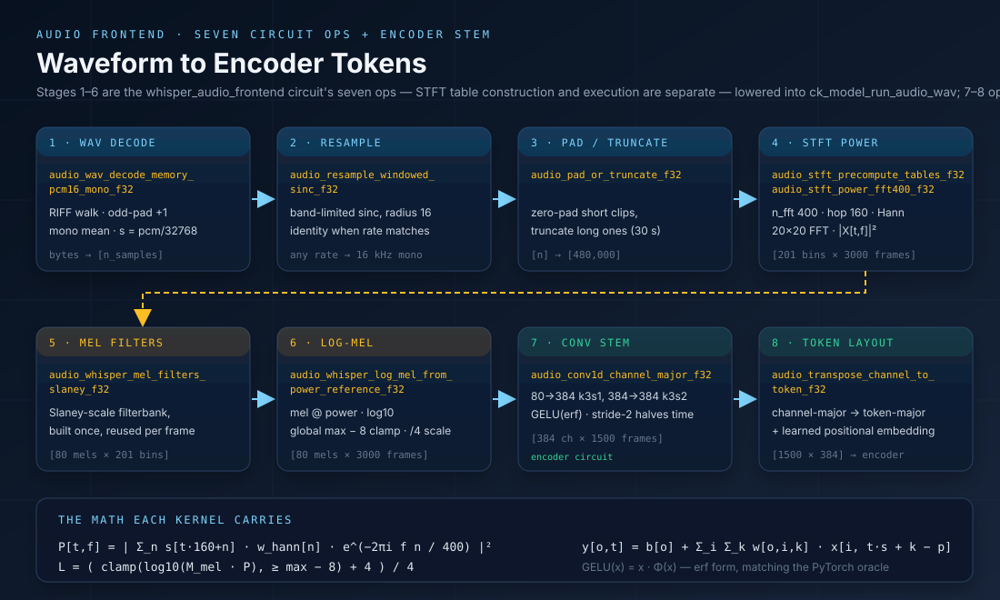
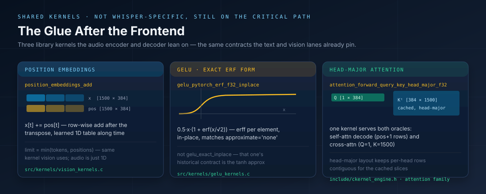
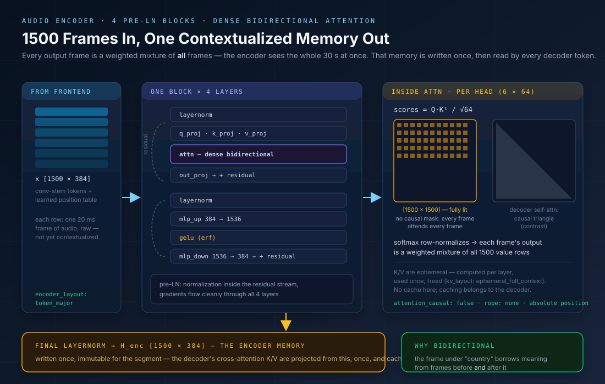

Audio Kernels Deep Dive: From WAV to Encoder Tokens, Kernel by Kernel
src/kernels/audio_kernels.c and include/ckernel_audio.h — numerically explicit
FP32 reference kernels. Every stage below is a named C function with a PyTorch oracle, not hidden preprocessing.
Pipeline overview: Concepts — Audio Frontend;
operator commands: v8 Runbook; evidence: Whisper Tiny End-to-End.
The Whisper Tiny frontend turns a PCM16 WAV into the [1500 × 384] token matrix the audio
encoder consumes. CK breaks that transformation into seven circuit operations across six frontend stages —
STFT table construction and STFT execution are separate ops — each with one job, one layout contract, and one
parity oracle. This page walks each kernel the same way the DeltaNet deep dive walks the recurrent update:
the math, the way the C actually computes it, the memory layout, and the evidence that pins it to PyTorch.

Table of Contents
- 1. WAV Decode —
audio_wav_decode_memory_pcm16_mono_f32 - 2. Resample —
audio_resample_linear_f32/audio_resample_windowed_sinc_f32 - 3. Pad / Truncate —
audio_pad_or_truncate_f32 - 4. STFT Power —
audio_stft_power_fft400_f32(20×20 mixed radix) - 5. Mel Filters —
audio_whisper_mel_filters_slaney_f32 - 6. Log-Mel —
audio_whisper_log_mel_from_power_reference_f32 - 7. Conv1D Stem —
audio_conv1d_channel_major_f32 - 8. Token Transpose —
audio_transpose_channel_to_token_f32 - 9. Supporting Kernels — position embeddings, erf GELU, head-major attention
- 10. The Encoder Body — four bidirectional blocks
- Parity & Nightly Coverage
1. WAV Decode: Bytes With a Contract, Not a Library Call
Most pipelines hand WAV parsing to a media library. CK walks the RIFF container by hand because the frontend's
input contract is part of the numerical evidence: PCM (format tag 1), 16-bit, any channel count, any sample
rate — anything else is rejected with a distinct error code before a single float is produced.
audio_wav_parse_memory validates the container, audio_wav_decode_pcm16_mono_f32 turns it
into mono f32, and the frontend circuit's map-owned provider audio_wav_decode_memory_pcm16_mono_f32
fuses the two into the single call the generated code makes. For audio that is already interleaved int16 in memory,
audio_pcm_s16_to_mono_f32 applies the same conversion without the container walk.
How The C Reads
- The chunk walker starts at offset 12 and hops chunk-to-chunk, adding a pad byte for odd-sized chunks — RIFF alignment is part of the format.
- Only the first
fmtanddatachunks are honored; everything else is skipped, so metadata-heavy WAVs (LIST, cue, bext) parse fine. - Multi-channel audio is downmixed by mean, not by taking channel 0 — stereo and mono files produce the same scale.
Why Not libsndfile
The frontend's whole job is to be a numerical contract. A hand-rolled 60-line parser means the exact set of accepted inputs is auditable, the downmix rule is explicit, and no platform codec version can drift the parity gates. The generated artifact owns WAV-to-encoder execution through ck_model_run_audio_wav; the transformer body itself never sees a WAV — it consumes the log-Mel tensors this kernel chain guarantees.
2. Resample: Two Explicit Paths to 16 kHz
Whisper expects 16 kHz mono. CK exposes two named resamplers and the contract records which one a run used:
audio_resample_linear_f32 for the fast path, and audio_resample_windowed_sinc_f32 for the
band-limited path. Both share one frame-count convention — audio_resampled_frame_count returns
1 + (n_in − 1) · r_out / r_in, preserving both endpoints of the signal, so a file never grows or
shrinks silently by a rounding choice.
How The C Reads
- All position math is double (
source = frame · r_in / r_out), so long files do not accumulate phase drift. - The linear path does its interpolation in integer numerator arithmetic plus one
fmaflerp — no float division per sample. - Out-of-range taps are skipped, not clamped; the
Σwdenominator makes the surviving window exact at both signal edges. radiusis bounded to[2, 128]— the kernel support is part of the validated contract.
Why Two Kernels Instead of One Flag
A boolean fast=true inside one function would hide which numerical path produced the evidence. Two named entry points mean the run report can say which resampler fed the STFT, and the parity gate can pin each one separately. Whisper Tiny at 16 kHz input skips this kernel entirely — but the contract has to exist for the day a 44.1 kHz file shows up.
3. Pad / Truncate: The Fixed 480,000-Sample Contract
Everything downstream of resampling assumes a fixed time extent: the STFT frame count, the encoder's positional
embedding table, and the 1500-token cross-attention bridge all derive from exactly 480,000 samples
(30 s at 16 kHz). audio_pad_or_truncate_f32 is the kernel that makes that true for
arbitrary input — short clips are zero-padded, long clips are truncated (not chunked), and the function
returns how many frames were real.
How The C Reads
memmove, notmemcpy— the copy is overlap-safe even if caller and callee ever share a buffer.- Only the tail beyond
copiedis zeroed; real samples are never touched, so a full 30 s clip is a pure pass-through. - The return value is the real frame count — downstream stages can distinguish signal from padding without a side channel.
Why Not Implicit In Resample
Extent normalization is a separate circuit operation (audio_pad_or_truncate) because the 30 s limit is a policy with numerical consequences — zero-padding changes the STFT energy and truncation loses content. Naming it keeps the policy auditable, keeps the resampler's contract purely about rate, and lets the limitation docs point at one honest line: longer files are truncated, not chunked.
4. STFT Power: Whisper Geometry as a 20×20 Mixed-Radix FFT
The spectrum is where the frontend spends nearly all of its FLOPs, and where parity is easiest to break.
Whisper's geometry is fixed: n_fft = 400, hop = 160, 201 bins, a
periodic Hann window, and center = true with reflect padding.
CK has three implementations of the same contract — a table-driven direct DFT
(audio_stft_power_precomputed_f32), a Whisper-specialized mixed-radix FFT
(audio_stft_power_fft400_f32), and the fully self-contained reference
(audio_whisper_stft_power_reference_f32) that the nightly gate runs against PyTorch.
How The C Reads
audio_stft_precompute_tables_f32builds the window and the full[bins × n_fft]cos/sin tables once — the per-frame kernels never callcosf/sinfin the hot loop.- The direct kernel is one
fmafper (sample, bin) per component: simple, obviously correct, and the reference every other variant is checked against. - The fft400 kernel treats 400 as 20×20: stage 1 computes twenty 20-point DFTs over the stride-20 subsequences, stage 2 combines them per output bin with a second twiddle lookup. Scratch is exactly
2 × 400floats. reflect_indexis a loop, not anabs— double reflections at very short signals still land in range.
Why Keep Three Implementations
Same pattern as the DeltaNet reference-first policy: the reference kernel is what the nightly PyTorch gate pins (tones, noise, and impulse signals). The precomputed and fft400 kernels are performance variants whose outputs must agree with that reference — so a faster FFT can never silently change the numbers the model was validated with. The circuit picks the variant; the contract keeps them equal.
5. Mel Filters: The Slaney Filterbank, Built Once
Between the STFT power grid and the log-Mel projection sits the filterbank itself: 80 triangular filters over the
201 power bins, spaced evenly on the Slaney mel scale between 0 Hz and Nyquist.
audio_whisper_mel_filters_slaney_f32 constructs the matrix once at table-build time — in double
precision — so the per-frame work stays a single f32 matmul and the triangle geometry can never drift between
runs.
How The C Reads
- All geometry is computed in
double— mel conversions, triangle edges, and the area normalization — then stored as f32; the table is built once and reused for every frame. - Triangles come from
n_mels + 2mel-spaced points converted back to Hz; each bin's weight ismax(0, min(lower, upper))scaled by2/(right−left). - Arguments are validated with typed rejections (−1 null, −2 bad geometry: odd
n_fft, non-positive rates or counts).
Why A Separate Circuit Op
The filterbank used to live inside the composite log-Mel reference. Promoting it to its own operation (audio_mel_filters) makes the Slaney identity a named, parity-gated artifact: the mel scale choice, the +2 point convention, and the area normalization each appear in the numerical contract, and the generated frontend passes the matrix into log-Mel as data — the way PyTorch passes a buffer, not a re-computation.
6. Log-Mel: Perceptual Compression With a Global Clamp
audio_whisper_log_mel_from_power_reference_f32 turns the [201 × T] power spectrum
into the [80 × T] log-Mel matrix the conv stem consumes. Three distinct numerical decisions live
here, and all three match whisper.log_mel_spectrogram exactly: a Slaney-style triangular mel
filterbank, a floored log10, and a global dynamic-range clamp before the final affine
rescale. The fused entry point audio_whisper_log_mel_reference_f32 is just STFT + this kernel composed
— the nightly gate checks the composition as well as the stages.
How The C Reads
- The filterbank is constructed in planned memory by
audio_whisper_mel_filters_slaney_f32and passed in as a[n_mels × 201]matrix — this kernel owns the contraction, while the mel-filter op upstream owns the design. - Pass one computes
log10(max(M, 1e-10))per entry while tracking the global maximum; pass two applies the floor and the(x+4)/4rescale in place. - The output layout is mel-major (
log_mel[mel · T + frame]) — which is precisely the channel-major layout the Conv1D stem wants, so no copy sits between the two kernels.
Why The Clamp Is Global
A per-frame clamp would renormalize silence up to the same range as speech and the encoder would see phantom structure in quiet regions. Whisper's max − 8 floor (80 dB below the loudest frame of the utterance) preserves relative energy across time. It is one line of C — and one of the easiest places for a reimplementation to quietly diverge, which is why the impulse-signal oracle exists.
7. Conv1D Stem: The Only Learned Layers Before Attention
audio_conv1d_channel_major_f32 is the frontend's first weighted kernel — everything
before it is fixed signal processing. The Whisper stem is two 3-tap convolutions with GELU between them:
80 → 384 at stride 1, then 384 → 384 at stride 2, which halves the
time axis from 3000 log-Mel frames to the 1500 audio tokens the encoder (and the decoder's
cross-attention) is built around. The kernel is deliberately generic — channels, kernel size, stride, and
padding are parameters — because the same contraction serves any 1D conv frontend.
How The C Reads
- Output-frame count is validated up front:
(T + 2p − k)/s + 1— a mismatched caller gets-3, not a buffer overrun. - Zero padding is a bounds check (
in_frame >= 0 && in_frame < T), not a padded buffer — no scratch allocation, no memset. - The accumulation starts from
bias[o]and runsfmafover (in_channel, tap) — deterministic FP32, one rounding per multiply-add. - Channel-major layout means each input row is contiguous, so the inner loop streams memory instead of striding across planes.
Why Stride 2 Is The Whole Point
Attention cost grows quadratically with sequence length. Halving the time axis before the transformer body is what makes 30 seconds of audio a 1500-token problem instead of a 3000-token one — a 4× attention saving, bought with a single 3-tap convolution. It is also the origin of the number 1500 that shows up everywhere downstream: encoder rows, cross-attention K/V rows, the Q=1, K=1500 decode oracle.
8. Token Transpose: The Named Layout Seam
audio_transpose_channel_to_token_f32 is eight lines of C and one of the most important kernels in the
frontend. Everything upstream is channel-major ([C × T]) because convolutions want
contiguous channels; everything downstream is token-major ([T × C]) because
attention wants one row per sequence element. This kernel is the single explicit point where the layout flips —
after it, the learned positional embedding is added and the matrix is literally the 1500-token sequence the encoder
reads.
How The C Reads
- Two loops, one assignment:
out[t·C + c] = in[c·T + t]— the reference is deliberately naive so the layout contract is unmistakable. - It is the only place the audio pipeline reorders memory; an optimized tile/blocked variant can replace it later as long as the contract (and the parity gate) holds.
- The positional embedding kernel operates token-major immediately after — the same
position_embeddings_add_*family the vision encoder uses, reused, not duplicated.
Why A Kernel, Not A Comment
Layout bugs are the silent killer of bring-up: the model runs, the shapes match, and the output is plausible-but-wrong. Making the transpose a named kernel means the circuit JSON can declare logical_layout: token_major at its output checkpoint, the x-ray probe can compare that checkpoint against PyTorch directly, and any future fused frontend must still honor the same boundary.
9. Supporting Kernels: The Shared Glue
Three library kernels complete the audio path without being Whisper-specific. position_embeddings_add
applies the learned 1D table after the token transpose — the same kernel the vision lane uses for its 2D table.
gelu_pytorch_erf_f32_inplace is the exact erf GELU the stem contracts pin (note the naming trap:
gelu_exact_inplace is historically the tanh approximation despite its name). And
attention_forward_query_key_head_major_f32 serves both attention oracles — the batched causal
self-attention transition and the Q=1, K=1500 cross-attention decode step — with head-major rows
that keep the cached K/V slices contiguous.

Why They Are Not Whisper Kernels
- Each already has a numerical contract from the text or vision lanes — the audio path inherits parity rather than re-proving it.
- This is the concrete form of "no Whisper model-name branch in codegen": the encoder is assembled from library pieces whose oracles predate Whisper.
Where They Are Pinned
unittest/test_audio_encoder.py exercises the erf GELU oracle (max diff ≤ 5e-7) and the
head-major attention oracles — including the Q=1, K=1500 cross case — against PyTorch
softmax(Q·Kᵗ/√d)·V. The positional add is pinned by the same suite's encoder
checkpoint-by-checkpoint X-ray.
10. The Encoder Body: Four Bidirectional Blocks
Everything so far produced tokens. The encoder's job is to contextualize them: four identical
pre-LayerNorm blocks turn the raw [1500 × 384] frame sequence into a memory where each frame's
vector has absorbed meaning from the whole 30 seconds. The block contract is explicit in
audio_transformer_encoder.json: layernorm → q/k/v_proj → attn → out_proj →
residual → layernorm → mlp_up → gelu → mlp_down → residual, then one final LayerNorm.
The attention itself is where the audio encoder differs from the decoder you already know. Three facts,
all declared in the circuit's attention_contract: it is dense bidirectional
(causal: false) — the score grid is the full 1500×1500 square, not the decoder's causal
triangle, so the frame under the word "country" borrows from frames before and after it. There is
no RoPE — position comes from the absolute learned table added back at the transpose. And the
K/V are ephemeral (ephemeral_full_context) — computed per layer, used once, freed;
caching belongs to the decoder, not here. Per head (6 heads × 64 dims) the math is the usual
softmax(Q·Kᵗ/√64)·V — softmax row-normalizes the square, so each frame's output
is a weighted mixture of all 1500 value rows.

What The Encoder Buys The Decoder
- Context per frame: after 4 layers, row
tis no longer "20 ms of spectrum" — it is that spectrum disambiguated by its acoustic surroundings, which is what makes cross-attention retrieval meaningful. - A stable retrieval target: because the memory is immutable for the segment, the decoder can project K/V from it once and cache them — the measured 79× decode win lives downstream of exactly this property.
Where It Is Pinned
The 79-edge PyTorch X-ray (compare_whisper_encoder_pytorch_v8.py) checkpoints the encoder
block by block — stem, positional add, per-layer attention and MLP, final norm — with
max abs ≈ 5.05e-4 and RMSE ≈ 6.7e-6 in FP32. The encoder is the dominant stage at
≈11.15 s of the ≈12.22 s end-to-end run, which is why it carries the deepest parity
evidence on this page.
Parity & Nightly Coverage
Where Every Kernel Above Is Pinned
make test-audio→unittest/test_audio.py: log-Mel frontend vs PyTorch (torch.stft, periodic Hann, reflect pad) across tones, noise, and impulse signals — power relative max ≤ 2e-5, log-Mel max ≤ 1.1e-3, RMSE ≤ 9e-5 — plus a stage-composition check that STFT + log-Mel equals the fused reference.unittest/test_audio_encoder.py: Whisper stem-1 / stem-2 Conv1D oracles, GELU erf (approximate='none') oracle, batched causal self-attention and persistent KV-cache transition oracles, and theQ=1, K=1500cross-attention decode oracle.tests/test_v8_audio_contract.pyandtests/test_v8_audio_encoder_contract.py: the portable v8 circuit/codegen regressions, including the checkpoint-by-checkpoint encoder x-ray driven bycompare_whisper_encoder_pytorch_v8.py.make test-whisper-e2e-auto(opt-in): full model-and-WAV transcription against the reference token sequence — the JFK sample matches Hugging Face token for token.
Operator commands live in the v8 Runbook; the pipeline and evidence live in Whisper Tiny End-to-End; the kernel-level math is summarized in Concepts — Audio Frontend & Cross-Attention. For the same treatment of a recurrent kernel family, see the Gated DeltaNet Deep Dive.